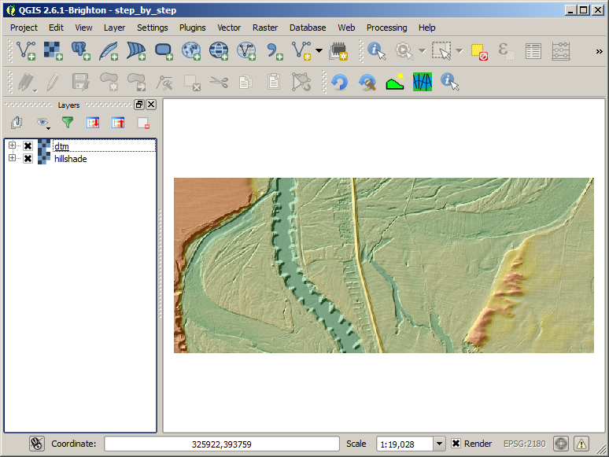
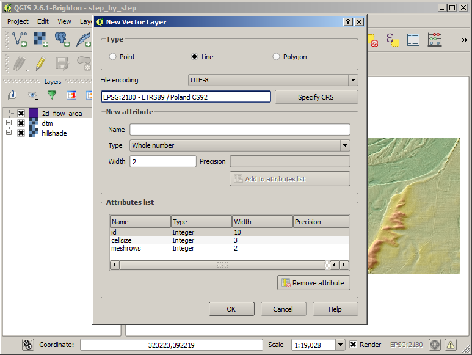
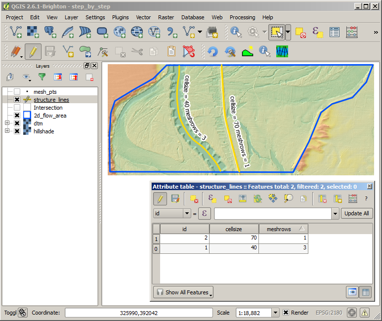
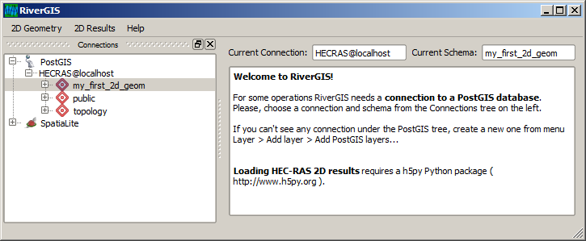
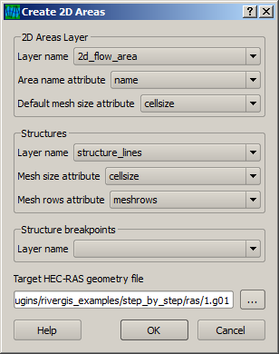

Step by step tutorial: Create HEC-RAS 2D Geometry¶
Required data:
- Flow area(s) shape — a polygon layer with a name and a mesh spacing attributes.
- DTM, digital terrain model — a raster layer.
Optional data:
- Structure lines — a polyline layer. You only need it, when 2D mesh should be aligned to a flow controlling structure like a levee or embankment.
- Structure breakpoints — a point layer. By default the mesh cell size at structures is given by an attribute of the structure line. If you need a variable mesh spacing or a cell face placed exactly at a location, you need breakpoints.
- Land cover — a polygon layer. HEC-RAS will use it to calculate mesh cells roughness.
Step 0. Install QGIS, PostGIS and the RiverGIS plugin¶
Note
This short subsection is Windows oriented, as most of the HEC-RAS users use this operating system. However, installing QGIS and PostGIS on GNU/Linux systems is not only possible, but much easier.
- If you need to install PostGIS, please refer to Windows download section of PostGIS website.
- Install QGIS with OSGeo4W installer. Use the ‘Advanced’ type of installation and from the list of packages select Desktop ‣ qgis. This will install current stable version of QGIS and all other required packages.
- Install RiverGIS plugin: Plugins ‣ Manage and install plugins.... Search for RiverGIS and click Install button.
Step 1. Create/load required data¶
Note
QGIS User Manual Loading raster data and Loading vector data in QGIS is an excellent start point for QGIS beginners.
- Start from saving QGIS project in a favourite directory Project ‣ Save
- Load a raster of digital terrain model (DTM). Below you can see a DTM with a hillshade as an overlay (see QGIS Training Manual).
DTM and hillshade overlay loaded into QGIS project
- Create a 2D Flow Areas polygon layer (Layer ‣ Create Layer ‣ New Shapefile Layer...) with required fields:
- name of 2D Flow Area (text) and
- cell size (whole number) — a default mesh points spacing in layer’s CRS units.
The layer’s CRS should be identical with DTM’s CRS. See QGIS Training Manual for creating vector layer details. Finally, change the layer’s rendering style by double clicking the layer in the legend tree (ref).

Create 2D Flow Areas polygon layer
- Create structure lines layer with required fields:
- cell size (whole number) — a default mesh points spacing along the structure
- mesh rows (whole number) — a number of mesh rows that should be aligned to the structure
Again, the layer’s CRS should be identical with DTM’s CRS. Change the layer’s rendering style by double clicking the layer in the legend tree.
Create structure lines layer
- Digitize 2D Flow Area.
Note
QGIS User Manual has extensive part on vector layers editing.
In the legend window select the 2D flow areas layer and toggle editing mode by clicking
button, then
and capture your 2D flow area polygon clicking on its vertices. Finish drawing with right click.

Digitize 2D flow area polygon
Depending on your QGIS setup, you can have attribute form displayed right after digitizing or you will have to open layer’s attribute table to define the attributes.

Define 2D flow area attributes
After the attributes are defined toggle the editing mode with
- Digitize structure lines.
In the legend window select the structure lines layer and toggle edit mode, then click
button and start capture a structure line by clicking its vertices. In this example we would like to have two structures defined:
- levee on the right side of the main channel: we don’t want the flow to go through the levee, so we have to align cell faces to the levee centerline. Please, refer to the HEC-RAS 5.0 documentation on creating 2d flow areas for detailed explanation. We would like the mesh spacing be a little bit finer
- the main channel itself: having 100 meters mesh spacing on floodplain is fine, but for the main channel we would like to have much finer cells, say 40 meters. The channel is wider than 40 meters, so we would need to align a few rows of the mesh to the river centerline — let’s check 3 rows.

Digitize structure line
Fill in the attributes:
Define structure lines attributes
Step 2. Create 2D Flow Area¶
- Select PostGIS connection and schema
Open RiverGIS plugin main window. Creating the mesh requires an active connection to a PostGIS database. Please refer to QGIS User Manual for creating PostGIS connection description.
RiverGIS plugin main window and connection/schema selection
After you have defined a connection, you should be able to select it in the Connections tree of the RiverGIS. Every newly created PostgreSQL database has a public schema, which we can use for storing our data, but it is advisable to create a new schema for each case. We would like to create a new schema ‘my_first_2d_geom’ and we do this in DB Manager plugin (Schema ‣ Create schema).
- Create the model geometry
Having the connection and schema selected we can create the geometry from the RiverGIS menu 2D Geometry ‣ Create 2D Flow Areas. Set the parameters of the tool and click OK button.
Create 2D Flow Area parameters dialog window
- Preview the mesh
If the 2D flow area creation was successful, we should be able to preview the mesh. First, let’s try to load the mesh points to QGIS: expand the schema in the Connections tree, right click the mesh_pts database table and add it to the map canvas.

Add mesh points to the map canvas

Mesh points added to the map canvas
Step 3. Import the geometry to HEC-RAS¶
- To preview the geometry in HEC-RAS, from the main HEC-RAS window run File ‣ Import HEC-RAS data... and choose the geometry created by RiverGIS.

Preview 2D Flow Area in HEC-RAS Geometry Data editor
- Preview the mesh in RAS Mapper

Preview 2D Flow Area mesh in RAS Mapper
Step 4. Check the mesh¶
Let’s have a closer look at the generated mesh.

Details of the generated mesh
What we would like to change in the mesh:
- Some groins miss a cell face (red arrows) — cell faces are placed at equal distance, but groins are not. We need a variable mesh spacing. We will achieve this by constructing breakpoints at which a cell face is required.
- Decrease a little bit the mesh spacing at the right levee.
This will result in the following:

Main channel mesh aligned with breakpoints (orange points)